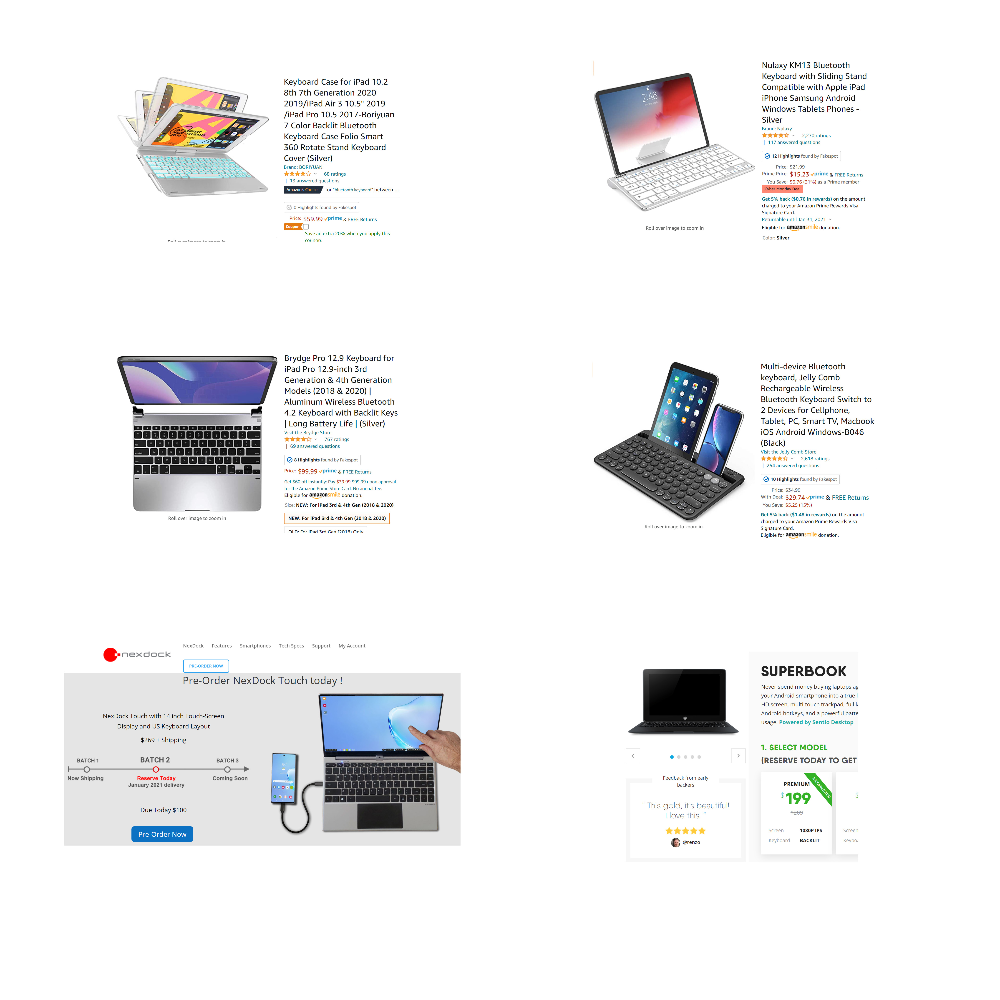
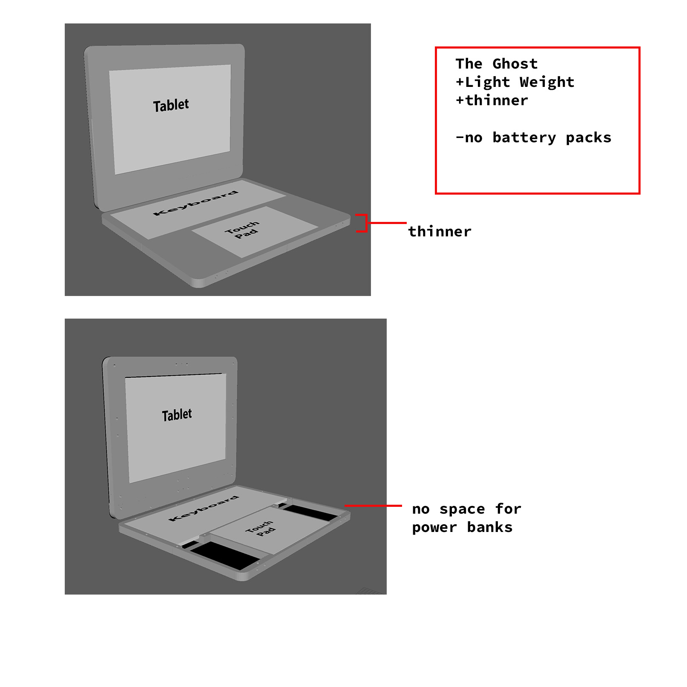
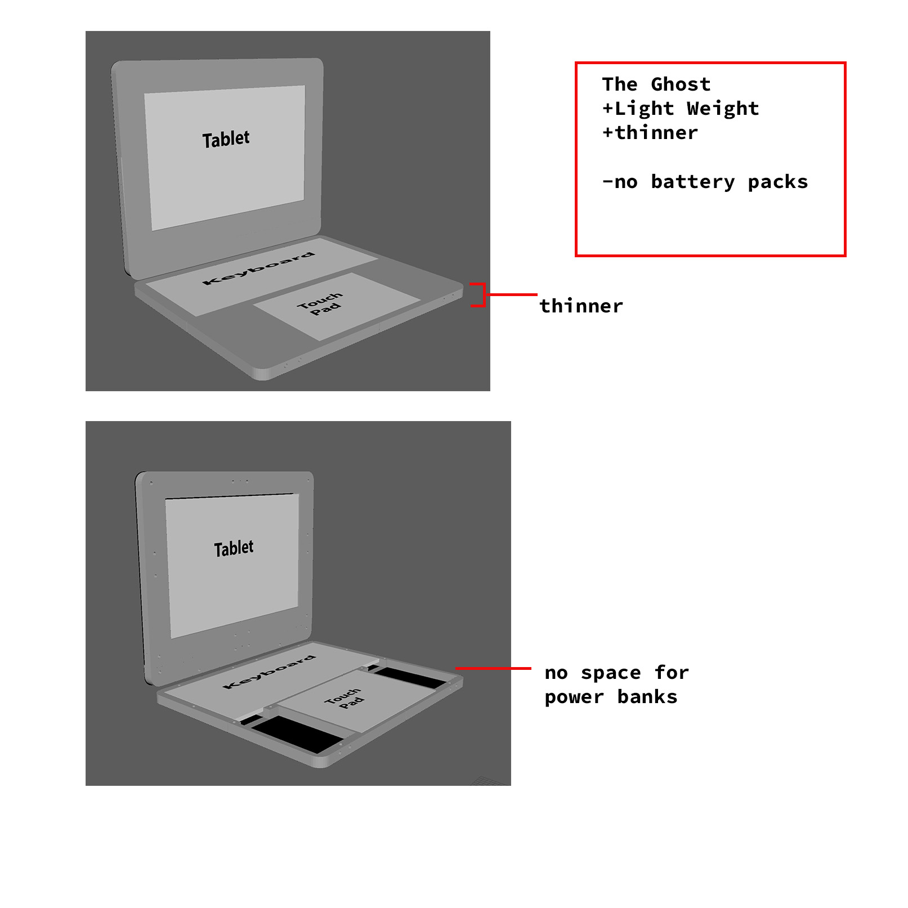

Ideation & Prototyping Week 12
Research for Design #3 Analyzing findings, developing personas and insights
For this week I analyze my findings and try to implement the knowledge into my prototype as well as look into other products and options to help develop my prototype further.  For the current products out there, there are some pretty close things but not perfect. The iPad clamshell keyboards aren't too bad but my biggest issue that sparked my initial plans for this prototype stemmed from this kind of device not having a trackpad. It sounds pretty trivial but when you have to take your hands off your keyboard every few seconds and touch your screen, it is pretty annoying. A Bluetooth mouse can help but it takes away your portability with the need for a desk. The Bluetooth keyboards that hold up your tablet or phone are even cheaper but with that, take a step farther back from the portability goal. Doing some research into what is out in the market, it looks like the top options out right now, actually aren't quite out yet. The options Nexdock and Superbook are pretty cool ideas and seem very sleek but again, they are unreleased and actually pretty pricey compared to how the device looks. My biggest issue with these products I would have to speculate is the touchpad. I've had issues with touchpads in the past before even on high-end gaming laptops, the only one that I've experienced a smooth enough experience with that I didn't want to immediately want to reach for a mouse were the extra smooth and large apple touchpads which is why I invested a large chunk of my budget into a nice one. Looking back at the options for the peripherals to use with this prototype, I went with the apple magic trackpad for the above
reasons but the issue with this trackpad is that it'll only work with specific apple devices out of the box. Choosing another
option can save you a lot of money though. I went with a cheaper no-name brand keyboard for the prototype since I don't usually
have any issues with most keyboards. The biggest downfall for this keyboard compared to the much more expensive apple keyboard
is the form factor. The images don't show it but there is a pretty chunky AA battery container in the rear which adds a ton of
thickness to my product. I think in the future, I'd like to try cutting the keyboard open and seeing if I can re-route the
battery pack to a more open space to reduce thickness.
The cheapest option would be grabbing a keyboard and trackpad combo. It'll be challenging making my design modular enough to
fit any of these options but I think that if I share my designs or set up some sort of form to input device specs to
auto-generate the 3D prints and CAD data for frame making, it would help grow the modularity of the product.
I looked into some hardware to help me make my product more sleek and functional. I was originally going to sandwich my 3D
prints with nuts and bolts but learned about using threaded inserts for 3D prints. The idea here is that you take a soldering
iron to the brass insert and you can melt the threaded screw hole right into your print. Using any sort of metal is way more
advantageous over plastic since plastic threads get weak over time and can't handle higher loads.
I originally used just nuts and bolts to hold the screen up but quickly realized that unless I carried around a screwdriver
or setup thumb screws, the screen would never stand up nicely. That's when I learned about tension or friction position hinges
that laptops normally use.
Some other bonus hardware I looked into and will probably implement is bearing which provide smooth rotations similar to
what you find in fidget spinners or skateboards, I think I'd like to use one of these if I had a rotating screen design.
Thumbscrews are convenient for removing things without screws but not super convenient so probably for removing components
that you wouldn't remove too often. Magnets would be awesome for holding the screen in position if there were a rotating
screen design and wold be look and feel really nice I think.
The idea of my final product is to be modular and open source so it actually makes a lot of sense to have multiple designs.
The first design, it's designed for the power user, the screen size is maximized, and
the base is thick enough to hold battery packs as well as have room to hold a power cord to stream energy to your devices
or maybe even your phone. The user could always remove the batteries to reduce the load but unfortunately, the bulk will
stay. I do find this a safe design since the weight of the base will keep the whole thing from falling over off your lap.

The second design goes in the complete opposite direction where it's extra light and minimizes any unnessesary parts. I
think for this design, a smaller tablet would need to be used to help avoid the tip over with the reduced weight ot the
base.
The swivel design I think is pretty cool, one of the biggest issues with touch screen laptops is the frustration of not
being able to just hold and use it like a tablet. Adding a swivel mount would make it great to use a tablet pen with
for art, writing, or even just standing the thing up for display.
The detachable idea would help improve ergonomics for anyone sitting at a desk. My concern with this design is how much
this would take away from the whole shell's design. To make the idea work, the screen would also need to have a built-in
stand. If I could figure out a locking mechanism and maybe even combine it with the swivel, it would be pretty awesome.
Looking back at the options for the peripherals to use with this prototype, I went with the apple magic trackpad for the above
reasons but the issue with this trackpad is that it'll only work with specific apple devices out of the box. Choosing another
option can save you a lot of money though. I went with a cheaper no-name brand keyboard for the prototype since I don't usually
have any issues with most keyboards. The biggest downfall for this keyboard compared to the much more expensive apple keyboard
is the form factor. The images don't show it but there is a pretty chunky AA battery container in the rear which adds a ton of
thickness to my product. I think in the future, I'd like to try cutting the keyboard open and seeing if I can re-route the
battery pack to a more open space to reduce thickness.
The cheapest option would be grabbing a keyboard and trackpad combo. It'll be challenging making my design modular enough to
fit any of these options but I think that if I share my designs or set up some sort of form to input device specs to
auto-generate the 3D prints and CAD data for frame making, it would help grow the modularity of the product.
I looked into some hardware to help me make my product more sleek and functional. I was originally going to sandwich my 3D
prints with nuts and bolts but learned about using threaded inserts for 3D prints. The idea here is that you take a soldering
iron to the brass insert and you can melt the threaded screw hole right into your print. Using any sort of metal is way more
advantageous over plastic since plastic threads get weak over time and can't handle higher loads.
I originally used just nuts and bolts to hold the screen up but quickly realized that unless I carried around a screwdriver
or setup thumb screws, the screen would never stand up nicely. That's when I learned about tension or friction position hinges
that laptops normally use.
Some other bonus hardware I looked into and will probably implement is bearing which provide smooth rotations similar to
what you find in fidget spinners or skateboards, I think I'd like to use one of these if I had a rotating screen design.
Thumbscrews are convenient for removing things without screws but not super convenient so probably for removing components
that you wouldn't remove too often. Magnets would be awesome for holding the screen in position if there were a rotating
screen design and wold be look and feel really nice I think.
The idea of my final product is to be modular and open source so it actually makes a lot of sense to have multiple designs.
The first design, it's designed for the power user, the screen size is maximized, and
the base is thick enough to hold battery packs as well as have room to hold a power cord to stream energy to your devices
or maybe even your phone. The user could always remove the batteries to reduce the load but unfortunately, the bulk will
stay. I do find this a safe design since the weight of the base will keep the whole thing from falling over off your lap.

The second design goes in the complete opposite direction where it's extra light and minimizes any unnessesary parts. I
think for this design, a smaller tablet would need to be used to help avoid the tip over with the reduced weight ot the
base.
The swivel design I think is pretty cool, one of the biggest issues with touch screen laptops is the frustration of not
being able to just hold and use it like a tablet. Adding a swivel mount would make it great to use a tablet pen with
for art, writing, or even just standing the thing up for display.
The detachable idea would help improve ergonomics for anyone sitting at a desk. My concern with this design is how much
this would take away from the whole shell's design. To make the idea work, the screen would also need to have a built-in
stand. If I could figure out a locking mechanism and maybe even combine it with the swivel, it would be pretty awesome.
 The last design adds in the amount of a cellphone. The idea here is that you could mirror your screen wirelessly to your
tablet. The other idea is to have a dedicated LCD monitor that you could connect a wire to your phone and use software
to run your phone in desktop mode. The front-facing camera is exposed so that you could do video conferences as well as
use your regular camera. This would be pretty great for cellular service as well since you wouldn't have to tether when
on the go. The biggest hurdle is probably making sure the software works together.
Overall I think researching and analyzing things for this project got some great ideas going and will make the result much better than before. I think the first version of this project that I prototype out will use most of the design implements I've discovered.
The last design adds in the amount of a cellphone. The idea here is that you could mirror your screen wirelessly to your
tablet. The other idea is to have a dedicated LCD monitor that you could connect a wire to your phone and use software
to run your phone in desktop mode. The front-facing camera is exposed so that you could do video conferences as well as
use your regular camera. This would be pretty great for cellular service as well since you wouldn't have to tether when
on the go. The biggest hurdle is probably making sure the software works together.
Overall I think researching and analyzing things for this project got some great ideas going and will make the result much better than before. I think the first version of this project that I prototype out will use most of the design implements I've discovered.
home
while (!deck.isInOrder()) {
print 'Iteration ' + i;
deck.shuffle();
i++;
}
print 'It took ' + i + ' iterations to sort the deck.';